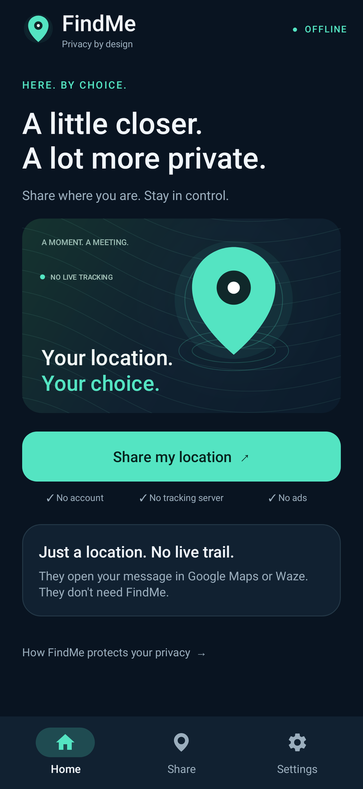
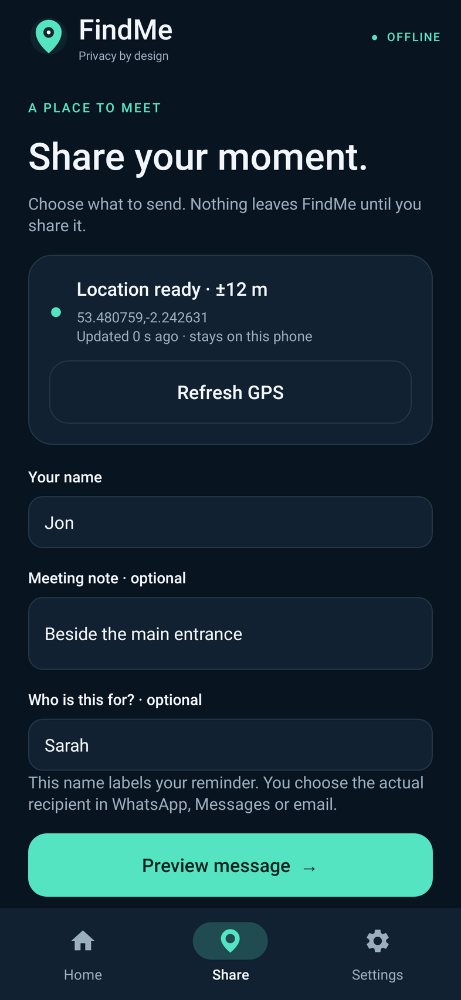
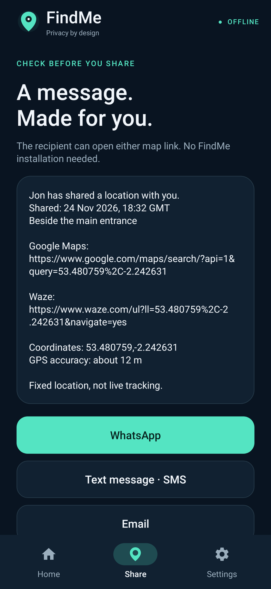
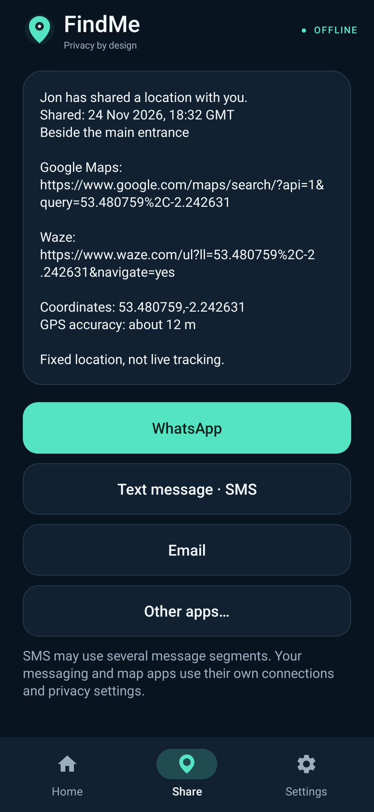
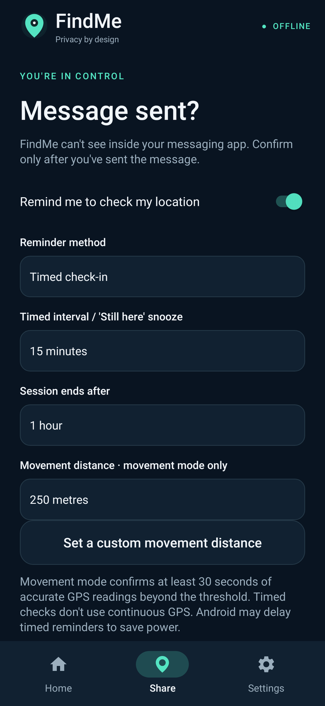
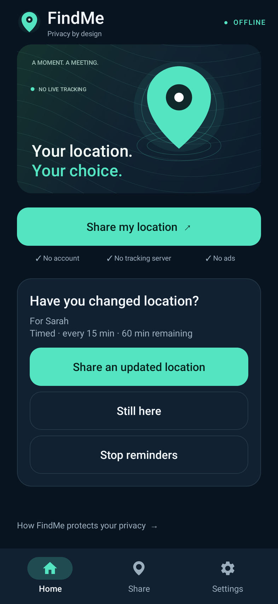
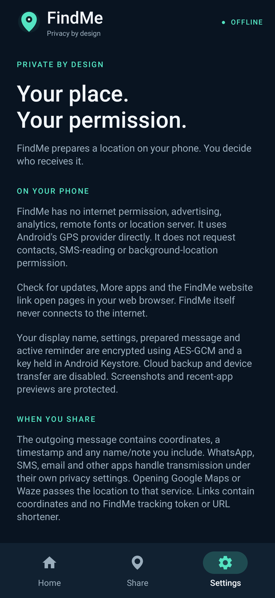
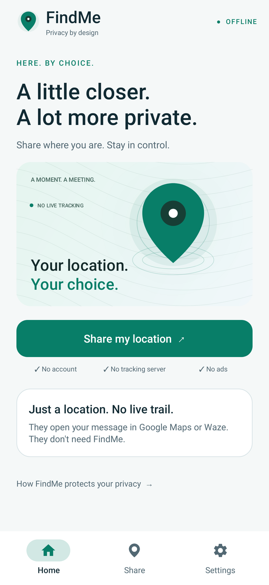

Your location. Your choice.
FindMe gets a GPS fix on your phone and turns it into a short message with Google Maps and Waze links. Send it on WhatsApp, by text or by email, and the person you are meeting taps a link to find you. They don't need FindMe.
It is one location, sent when you choose, not live tracking. FindMe has no internet permission, no account and no adverts, and what it keeps on your phone is encrypted.
Download for AndroidHow to install
- Version 1.0.1
- Android 10 or later
- 455 KB
Free, with nothing to unlock. No adverts, no account with the developer, no tracking. Compare or read the release notes.
Chrome may say the file might be harmful. It shows this for app files that do not come from Google Play. Choose Download anyway.

- No live trackingYou send one fixed point. Nothing follows you.
- No internet permissionAndroid won't let FindMe go online.
- No accountNothing to sign up for, nothing to log in to.
- Nothing needed at their endThey open your link in Google Maps or Waze.
A look inside
These are FindMe's real screens, drawn from the app's own code with a made-up name and a public point in Manchester city centre. Swipe or scroll sideways to see them all.







How it works
Three steps, and you stay in charge of each one.
Get a fix
Tap Share my location. FindMe asks Android's GPS for a fresh position and shows how accurate it is. It works with no signal; outdoors is quickest.
Check the message
Add your name and a note such as Beside the main entrance. You see exactly what will be sent before anything leaves the app.
Send it your way
Pick WhatsApp, a text, email or another app, choose the person there and send. Then, if you like, set a reminder to check whether you have moved.
Everything is in, and all of it is free
Nothing below is held back for a paid tier, because there is no paid tier.
Sharing
- A message anyone can open
- Google Maps and Waze links, plain coordinates for any other map, the time, your name and your note. The other person needs no app and no account.
- Accuracy you can see
- Every fix shows its accuracy and age. Old fixes are refused, low-accuracy ones are flagged, and mock locations are ignored.
- You press send
- FindMe hands the message to the app you choose. Nothing is ever sent automatically.
Reminders, not tracking
- Timed check-ins
- Every 5 to 60 minutes for up to four hours, FindMe asks Have you changed location? GPS is not left running.
- Moved away?
- Or let FindMe nudge you when you are 50 to 10,000 metres from where you shared, after three accurate readings over 30 seconds, with a Stop button always showing.
- Still here
- Tap Still here to keep your shared point and snooze the next check, or Share update to send a new one.
Quick to reach
- Shortcut and tile
- A home-screen shortcut and a Quick Settings tile open the sharing screen, ready for you to check and send.
- Made to fit you
- Dark, light or follow-system themes, four accent colours, reduced motion and haptics you can switch off. Text follows Android's size setting.
Private by design
- No internet permission
- Android does not let FindMe connect to anything. Links you send are opened by the other person's own apps.
- Encrypted on the phone
- Your name, settings and any active reminder are encrypted with a key held in Android Keystore. Backups, screenshots and recent-app previews are blocked.
- No history kept
- There is no list of places you have been. A reminder's location is deleted when it ends, and an optional app lock asks for your fingerprint or PIN.
Your location stays yours
No internet permission
FindMe can't send anything anywhere. You send the message yourself, in the app you choose.
No account, no history
No sign-up, no server, no adverts, and no record of where you have been.
Encrypted and locked away
What FindMe keeps is encrypted, left out of backups and hidden from screenshots.
Installing and updating
FindMe is not on Google Play, so your phone asks a couple of extra questions the first time.
Download the app file
Tap Download on your phone. The file is called FindMe.apk and is about 455 KB. If Chrome says the file might be harmful, choose Download anyway.
Allow the install
Open the file. The first time, Android asks you to allow your browser to install apps. Allow it, go back and tap Install. If Google Play Protect steps in, choose More details, then Install anyway.
Updating later
In FindMe, open Settings and tap Check for updates. It opens the releases page in your browser, because FindMe itself never goes online. Download the new file and open it to install it over the old one. Your settings are kept.
Version 1.0.1, released 26 November 2026. See the release notes, or check your download.
Questions
Is FindMe free?
Yes. There is no paid version, no subscription and no adverts.
Is it on Google Play?
No. FindMe is a personal project and is downloaded from this site as an Android app file. It needs Android 10 or later.
Does the other person need FindMe?
No. They get an ordinary message with a Google Maps link, a Waze link and the coordinates. Any phone or computer can open it.
Is this live tracking?
No. FindMe sends one fixed point, taken when you tap share. If you move, it can remind you to send a new one, but it never updates anyone by itself.
Does it need the internet?
No. GPS works with no signal, and FindMe has no internet permission at all. Sending the message, and opening the links, use the other apps' own connections.
How accurate is it?
As accurate as your phone's GPS at that moment, which FindMe shows, usually within 5 to 20 metres outdoors. Indoors and among tall buildings it can be much less. Low-accuracy fixes are flagged and the accuracy is written into the message.
Will reminders always arrive on time?
Usually, but Android can delay them to save battery, and a phone restart or force-stop ends them. FindMe never restarts movement checks by itself. It is not an emergency service.
Can I delete what I have shared?
You can delete everything FindMe keeps, from Settings, at any time. A message you have already sent stays in WhatsApp, Messages or email, and the person who got it can keep or forward it.
Why can't I take a screenshot of FindMe?
Your location is on screen, so FindMe blocks screenshots and blurs itself in the recent apps view. The message you send is not affected.
How do I get new versions?
Open Settings and tap Check for updates. It opens the releases page in your browser. Download the new file and open it to install it over the old one; your settings are kept.
Who made it?
FindMe is made by Jonathan Jackson, an independent developer in the United Kingdom. It is not connected with Google, Waze or WhatsApp.
Meet up, without being tracked
Free, with no adverts and nothing to unlock. Made by the developer of several other free Android apps: see them all.